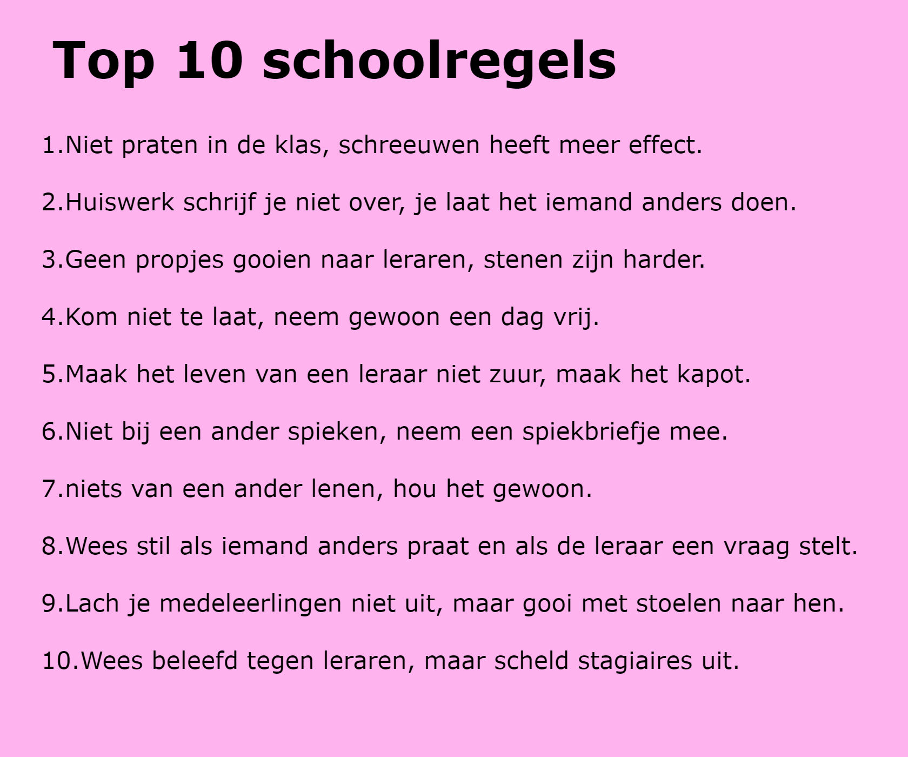
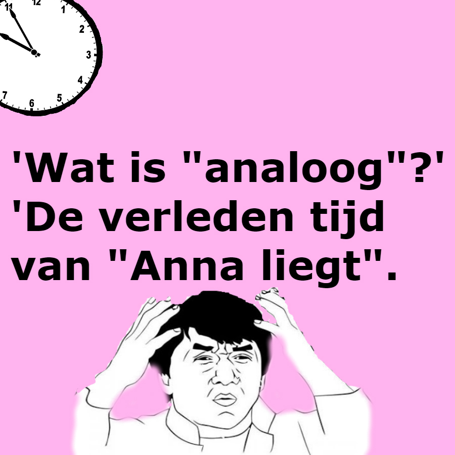

- Nederlands is mijn goedste vak, dat had je niet gedenkt hé?
- School was vandaag zo leuk, dat ik maar 3 keer in slaap viel.
- School begint met een S, slavernij ook.
- Kijk naar je zelf en niet naar een ander.. Behalve bij een proefwerk.
- Ken je dat gevoel in het weekend, dat je school mist? Hahaha ik ook niet!
- Heb je hoogtevrees? Want je haalt geen hoge cijfers.
- Algemene wiskunde regel: als het makkelijk lijkt doe je het waarschijnlijk fout.
- Vroeger leerde je praten en lopen, op school leer je stil zijn en stilzitten.
- Potlood, papier, school. Tekenen van depressie.
- Leren doe je met vallen en opstaan, maar ik blijf toch liever een jaartje zitten.
- Als school de beste tijd van mijn leven is, kan ik maar beter zelfmoord plegen.
- Als we leren door vragen te stellen, waarom maken we onze eigen toetsvragen niet.
- Ik weet nog de middelbare school, de tijd dat ik ondekte wat ik allemaal niet kon.
- Tijdens een proefwerk kijk je omhoog voor inspiratie, naar beneden voor concentratie en naar links en rechts voor informatie.
- Waarom ben ik niet 100 jaar geleden geboren, dan had ik nu 100 jaar minder geschiedenis om te leren.
- Leraren maken geen fouten want fouten maken is menselijk
- "de" of "het" rechte bocht?
Antwoord: Er bestaan geen rechte bochten. - Wat is het verschil tussen een school en een gevangenis? niks
- Hoezo vreemde talen leren? Ik kan niet eens normaal Nederlands praten!
- Mijn leraar vroeg mij ooit wat dichterbij was: de maan of China. Ik antwoordde de maan, want die kan ik vanaf hier zien.


